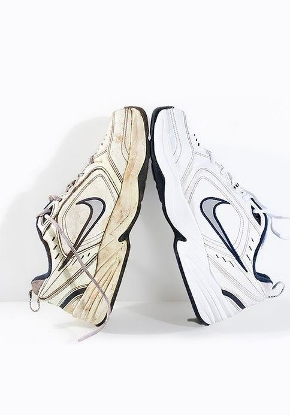
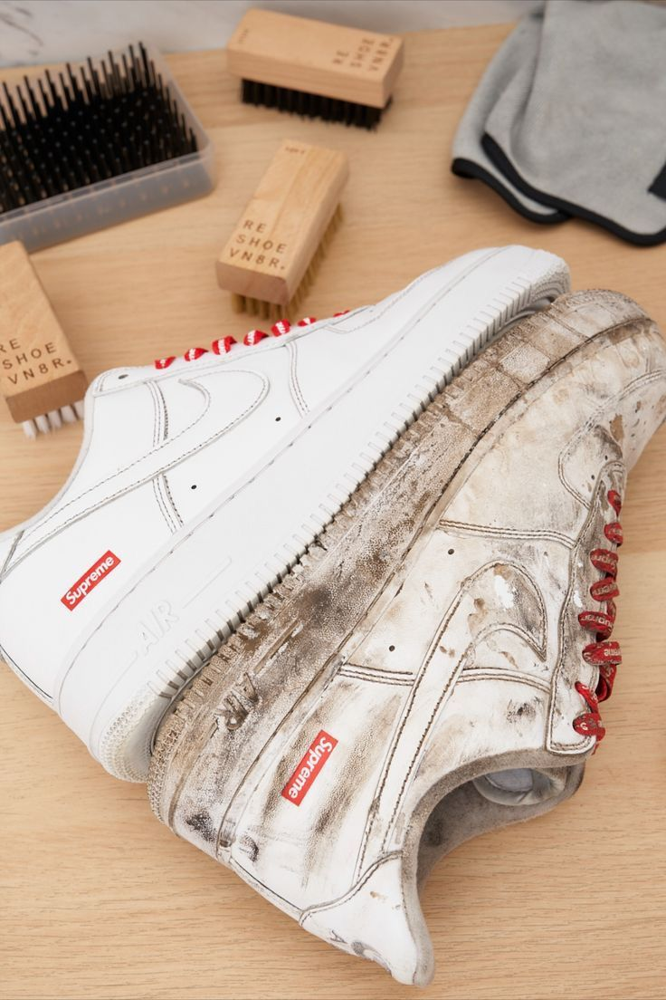
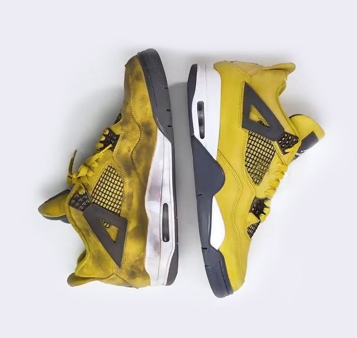
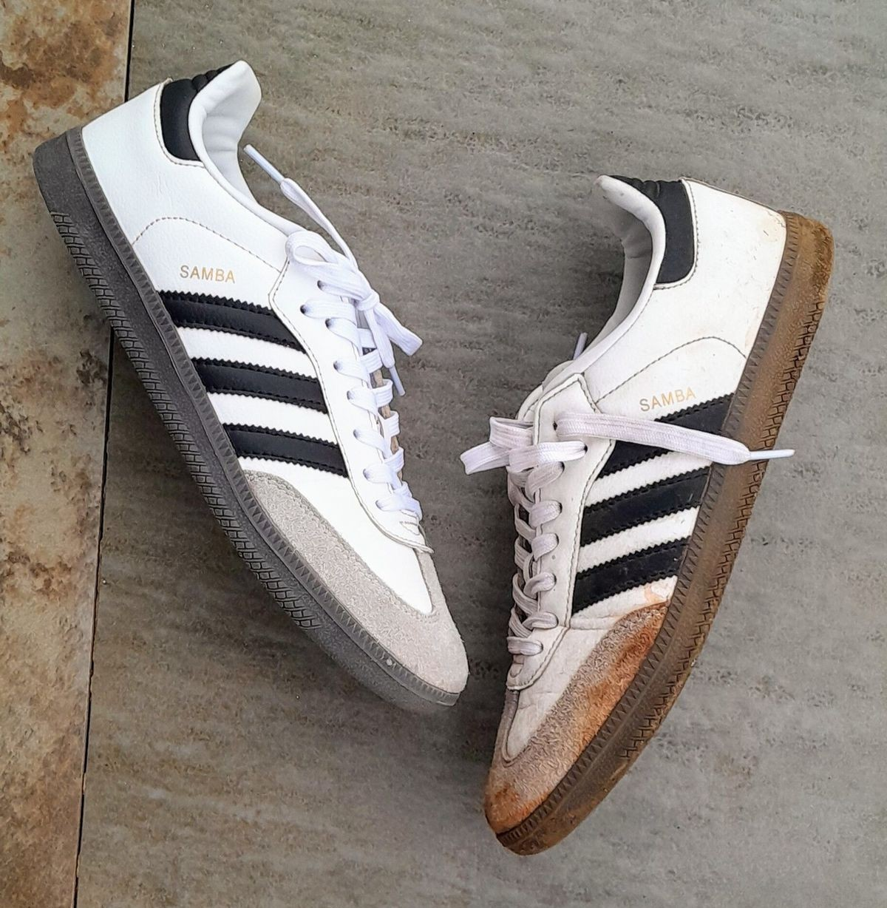

Deep cleaning
Foam, brushwork and careful material handling for uppers, midsoles and laces.
Putney, London SW15 · Collection and return
Premium sneaker cleaning and restoration for the pairs you actually care about.

Care for valuable pairs
Foam, brushwork and careful material handling for uppers, midsoles and laces.
Targeted work for stains, yellowing, scuffs and tired-looking details.
We collect from your door in Putney and nearby SW15, then bring them back ready to wear.
Before and after



Cleaning in action
Add short clips from Instagram, TikTok or your phone to show the process and build trust before people book.
Simple booking
Send photos of your sneakers on WhatsApp or Instagram.
Get a quote and choose collection or drop-off in Putney/SW15.
We clean, restore and return them ready to wear.
Get in touch today
Serving Putney, London SW15 and nearby areas. Send photos of the pair and we will reply with the best option.